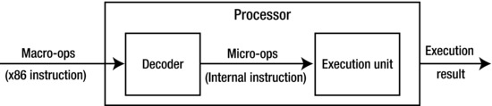

Embedded systems, an emerging area of computer technology, combine multiple technologies, such as computers, semiconductors, microelectronics, and the Internet, and as a result, are finding ever-increasing application in our modern world. With the rapid development of computer and communications technologies and the growing use of the Internet, embedded systems have brought immediate success and widespread application in the post-PC era, especially as the core components of the Internet of Things. They penetrate into every corner of modern life from the mundane, such as an automated home thermostat, to industrial production, such as in robotic automation in manufacturing. Embedded systems can be found in military and national defense, healthcare, science, education, and commercial services, and from mobile phones, MP3 players, and PDAs to cars, planes, and missiles.
This chapter provides the concepts, structure, and other basic information about embedded systems and lays a theoretical foundation for embedded application development, of which application development for Android OS is becoming the top interest of developers.
Introduction to Embedded Systems
Since the advent of the first computer, the ENIAC, in 1946, the computer manufacturing process has gone from vacuum tubes, transistors, integrated circuits, and large-scale integration (LSI), to very-large-scale integration (VLSI), resulting in computers that are more compact, powerful, and energy efficient but less expensive (per unit of computing power).
After the advent of microprocessors in the 1970s, the computer-using world witnessed revolutionary change. Microprocessors are the basis of microcomputers, and personal computers (PCs) made them more affordable and practical, allowing many private users to own them. At this stage, computers met a variety of needs: they were sufficiently versatile to satisfy various demands such as computing, entertainment, information sharing, and office automation. As the adoption of microcomputers was occurring, more people wanted to embed them into specific systems to intelligently control the environment. For example, microcomputers were used in machine tools in factories. They were used to control signals and monitor the operating state through the configuration of peripheral sensors. When microcomputers were embedded into such environments, they were prototypes of embedded systems.
As the technology advanced, more industries demanded special computer systems. As a result, the development direction and goals of specialized computer systems for specific environments and general-purpose computer systems grew apart. The technical requirement of general-purpose computer systems is fast, massive, and diversified computing, whereas the goal of technical development is faster computing speed and larger storage capacity. However, the technical requirement of embedded computer systems is targeted more toward the intelligent control of targets, whereas the goal of technical development is embedded performance, control, and reliability closely related to the target system.
Embedded computing systems evolved in a completely different way. By emphasizing the characteristics of a particular processor, they turned traditional electronic systems into modern intelligent electronic systems. Figure 1-1 shows an embedded computer processor, the Intel Atom N2600 processor, which is 2.2 × 2.2 cm, alongside a penny.
Figure 1-1.
Comparison of an embedded computer chip to a US penny. This chip is an Intel Atom processor
The emergence of embedded computer systems alongside general-purpose computer systems is a milestone of modern computer technologies. The comparison of general-purpose computers and embedded systems is shown in Table 1-1.
Table 1-1.
Comparison of General-Purpose Computers and Embedded Systems
Item | General-purpose computer systems | Embedded systems |
|---|---|---|
Hardware | High-performance hardware, large storage media | Diversified hardware, single-processor solution |
Software | Large and sophisticated OS | Streamlined, reliable, real-time systems |
Development | High-speed, specialized development team | Broad development sectors |
Today, embedded systems are an integral part of people’s lives due to their mobility. As mentioned earlier, they are used everywhere in modern life. Smartphones are a great example of embedded systems.
Mobile Phones
Mobile equipment, especially smartphones, is the fastest growing embedded sector in recent years. Many new terms such as extensive embedded development and mobile development have been derived from mobile software development. Mobile phones not only are pervasive but also have powerful functions, affordable prices, and diversified applications. In addition to basic telephone functions, they include, but are not limited to, integrated PDAs, digital cameras, game consoles, music players, and wearables.
Consumer Electronics and Information Appliances
Consumer electronics and information appliances are additional big application sectors for embedded systems. Devices that fall into this category include personal mobile devices and home/entertainment/audiovisual devices.
Personal mobile devices usually include smart handsets such as PDAs, as well as wireless Internet access equipment like mobile Internet devices (MIDs). In theory, smartphones are also in this class; but due to their large number, they are listed as a single sector.
Home/entertainment/audiovisual devices mainly include network television like interactive television; digital imaging equipment such as digital cameras, digital photo frames, and video players; digital audio and video devices such as MP3 players and other portable audio players; and electronic entertainment devices such as handheld game consoles, PS2 consoles, and so on. Tablet PCs (tablets), one of the newer types of embedded devices, have become favorites of consumers since Apple released the iPad in 2010.
The affordability of consumer electronics truly reflects the cost-effectiveness of embedded system design.
Definition of an Embedded System
So far, you have a general understanding of embedded systems from the examples given. But what is the embedded system? Currently, there are different concepts for embedded system in the industry.
According to the Institution of Engineering and Technology (IET), embedded systems are devices used to control, monitor, or assist the operation of equipment, machinery, or plants. Smartphones, as an important sector of embedded systems, have the following characteristics:
Limited Resources
The majority of embedded systems have extremely limited resources. On one hand, the resources referred to here are hardware resources, including computing speed and processing capability of the CPU, size of the available physical memory, and capacity of the ROM or flash memory that stores code and data. On the other hand, resources are also the functions provided by the software. Compared with general operating systems, embedded operating systems have comparatively simple functions and structure. Embedded systems’ resource constraints lead to designs that are sufficient, instead of powerful.
Real-Time Performance
The real-time aspect of embedded systems means tasks must usually be executed in a certain, predictable amount of time, and maximum execution time limits must be ensured.
Real time is divided into soft real time and hard real time. Soft real time has less-stringent requirements; even if the time limit cannot be met in some cases, it won’t have a fatal impact on the system. For example, a media player system is soft real time. The system is supposed to play 24 frames in one second, but it is also acceptable when the system fails in some overloaded conditions. Hard real time has strict requirements. The execution of tasks must be absolutely ensured in all situations; otherwise the consequences will be catastrophic. For example, aircraft autopilot and navigation system are hard real-time systems. They must accomplish a specific task within the certain time limit; otherwise a major accident, collision, or crash could occur.
Many embedded systems (mobile phones, game consoles, and so on) do not need real-time guarantees. But real time is the key for some embedded systems, such as a steel-rolling system in a large steel mill and the real-time alarm system in a large electrical substation. In these applications, the system must respond to a specific signal at a given time.
Robustness
Some embedded systems require high reliability. Reliability is also known as robustness, which is the ability to continue operating in abnormal or dangerous situations. For example, when an embedded system encounters input errors, network overload, or intentional attacks, the system must be robust enough that it doesn’t hang or crash, but operates as usual.
Integrated Hardware and Software
General-purpose computers install software dynamically. The software can be installed and uninstalled according to the users’ demands. But for embedded systems, software and hardware are often integrated and sold as a package. This trend is shifting for devices that are always connected via the Internet, such as smartphones and the Internet of Things (wearables, for example). In these cases, original device manufacturers (ODMs) can do regular software updates.
Embedded software is usually built into the hardware ROM and runs automatically when the system is started. Under normal circumstances, the user cannot easily modify or delete the software without the aid of special tools to ensure the integrity of the embedded system. Due to the integration of hardware and software, embedded systems usually do not have the intellectual property rights issues that general computer systems have to address. For example, software piracy on consumer electronics such as mobile phones and digital cameras is almost impossible due to the way the software is installed. However, this feature also leads to slow upgrading of system software, because it is difficult to do so.
Power Constraints
General-purpose computers are often directly connected to AC power. Therefore, general-purpose computer hardware and software designers can assume that the power supply is inexhaustible. But for embedded systems that cannot be directly connected to AC power—for example, mobile phones, electric toys, and cameras—the only power source is the battery. This means their power consumption is constrained, and so energy efficiency is important. Cooling is another key factor. In general, more power consumption within a certain time period causes more heat to be generated, which can cause problems in some cases such as battery fires, malfunctioning components due to overheating, and quick losses of electricity.
Difficult Development and Debugging
Compared to hardware and software development of general-purpose computers, embedded system development has higher technical requirements. For example, developers of embedded software often must understand the working principles and mechanisms of the hardware and hardware layers during the development stage. To debug the code, these developers often must use online simulations, ROM monitors, and ROM programming tools, which don’t occur in the desktop development.
Typical Architecture of an Embedded System
Figure 1-2 shows a configuration diagram of a typical embedded system consisting of two main parts: embedded hardware and embedded software. The embedded hardware primarily includes the processor, memory, bus, peripheral devices, I/O ports, and various controllers. The embedded software usually contains the embedded operating system and various applications.
Figure 1-2.
Basic architecture of an embedded system
Input and output are characteristics of any open system, and the embedded system is no exception. In the embedded system, the hardware and software often collaborate to deal with various input signals from the outside and output the processing results through some form. The input signal may be an ergonomic device (such as a keyboard, mouse, or touch screen) or the output of a sensor circuit in another embedded system. The output may be in the form of sound, light, electricity, or another analog signal, or a record or file for a database.
Typical Hardware Architecture
The basic computer system components—microprocessor, memory, and input and output modules—are interconnected by a system bus in order for all the parts to communicate and execute a program (see Figure 1-3).
Figure 1-3.
Computer architecture
In embedded systems, the microprocessor’s role and function are usually the same as those of the CPU in a general-purpose computer: control computer operation, execute instructions, and process data. In many cases, the microprocessor in an embedded system is also called the CPU. Memory is used to store instructions and data. I/O modules are responsible for the data exchange between the processor, memory, and external devices. External devices include secondary storage devices (such as flash and hard disk), communications equipment, and terminal equipment. The system bus provides data and controls signal communication and transmission for the processor, memory, and I/O modules.
There are basically two types of architecture that apply to embedded systems: Von Neumann architecture and Harvard architecture.
Von Neumann Architecture
Von Neumann architecture (also known as Princeton architecture) was first proposed by John von Neumann. The most important feature of this architecture is that the software and data use the same memory: that is, “The program is data, and the data is the program” (as shown in Figure 1-4).
Figure 1-4.
Von Neumann architecture
In the Von Neumann architecture, an instruction and data share the same bus. In this architecture, the transmission of information becomes the bottleneck of computer performance and affects the speed of data processing; so, it is often called the Von Neumann bottleneck. In reality, cache and branch-prediction technology can effectively solve this issue.
Harvard Architecture
The Harvard architecture was first named after the Harvard Mark I computer. Compared with the Von Neumann architecture, a Harvard architecture processor has two outstanding features. First, instructions and data are stored in two separate memory modules; instructions and data do not coexist in the same module. Second, two independent buses are used as dedicated communication paths between the CPU and memory; there is no connection between the two buses. The Harvard architecture is shown in Figure 1-5.
Figure 1-5.
Harvard architecture
Because the Harvard architecture has separate program memory and data memory, it can provide greater data-memory bandwidth, making it the ideal choice for digital signal processing. Most systems designed for digital signal processing (DSP) adopt the Harvard architecture. The Von Neumann architecture features simple hardware design and flexible program and data storage and is usually the one chosen for general-purpose and most embedded systems.
To efficiently perform memory reads/writes, the processor is not directly connected to the main memory, but to the cache. Commonly, the only difference between the Harvard architecture and the Von Neumann architecture is single or dual L1 cache. In the Harvard architecture, the L1 cache is often divided into an instruction cache (I cache) and a data cache (D cache), but the Von Neumann architecture has a single cache.
Microprocessor Architecture of Embedded Systems
The microprocessor is the core in embedded systems. By installing a microprocessor into a special circuit board and adding the necessary peripheral circuits and expansion circuits, a practical embedded system can be created. The microprocessor architecture determines the instructions, supporting peripheral circuits, and expansion circuits. There are a wide range of microprocessors: 4-, 8-, 16-, 32-, and 64-bit, with performance from MHz to GHz, and ranging from a few pins to thousands of pins.
In general, there are two types of embedded microprocessor architecture: reduced instruction set computer (RISC) and complex instruction set computer (CISC). The RISC processor uses a small, limited, simple instruction set. Each instruction uses a standard word length and has a short execution time, which facilitates the optimization of the instruction pipeline. To compensate for the command functions, the CPU is often equipped with a large number of general-purpose registers. The CISC processor features a powerful instruction set and different instruction lengths, which facilitates the pipelined execution of instructions. A comparison of RISC and CISC is given in Table 1-2.
Table 1-2.
Comparison of RISC and CISC
RISC | CISC | |
|---|---|---|
Instruction system | Simple and efficient instructions. Realizes uncommon functions through combined instructions. | Rich instruction system. Performs specific functions through special instructions; handles special tasks efficiently. |
Memory operation | Restricts the memory operation and simplifies the controlling function. | Has multiple memory operation instructions and performs direct operation. |
Program | Requires a large amount of memory space for the assembler and features complex programs for special functions. | Has a relatively simple assembler and features easy and efficient programming of scientific computing and complex operations. |
Interruption | Responds to an interrupt only at the proper place in instruction execution. | Responds to an interruption only at the end of execution. |
CPU | Features fewer unit circuits, small size, and low power consumption. | Has feature-rich circuit units, powerful functions, a large area, and high power consumption. |
Design cycle | Features a simple structure, a compact layout, a short design cycle, and easy application of new technologies. | Features a complex structure and long design cycle. |
Usage | Features a simple structure, regular instructions, simple control, and easy learning and application. | Features a complex structure, powerful functions, and easy realization of special functions. |
Application scope | Determines the instruction system per specific areas, which is more suitable for special machines. | Becomes more suitable for general-purpose machines. |
RISC and CISC have distinct characteristics and advantages, but the boundaries between RISC and CISC begin to blur in the microprocessor sector. Many traditional CISCs absorb RISC advantages and use a RISC-like design. Intel x86 processors are typical of them. They are considered CISC architecture. These processors translate x86 instructions into RISC-like instructions through a decoder and comply with the RISC design and operation to obtain the benefits of RISC architecture and improve internal operation efficiency. A processor’s internal instruction execution is called micro operation, which is denoted as micro-OP and abbreviated mu-op (or written μ-op or μop). In contrast, the x86 instruction is called macro operation or macro-op. The entire mechanism is shown in Figure 1-6.

Figure 1-6.
Micro and macro operations of an Intel processor
Normally, a macro operation can be decoded into one or more micro operations to execute, but sometimes a decoder can combine several macro operations to generate a micro operation to execute. This process is known as x86 instruction fusion (macro-ops fusion). For example, the processor can combine the x86 CMP (Compare) instruction and the x86 JMP (Jump) instruction to produce a single micro operation—the compare and jump instruction. This combination has obvious benefits: there are fewer instructions, which indirectly enhances the performance of the processor execution. And the fusion enables the processor to maximize the parallelism between the instructions and consequently improve the implementation efficiency of the processor.
Currently, microprocessors used in most embedded systems have five architectures: RISC, CISC, MIPS, PowerPC, and SuperH. The details follow.
RISC: Advanced RISC Machines (ARM) Architecture
Advanced RISC Machines (ARM) is a generic term for a type of RISC microprocessor. ARM is designed by the British company ARM Holdings. The company specializes in the design and development of RISC chips. As a supplier of intellectual property, the company itself does not manufacture its chips, but licenses its designs to other partners to produce them. The world’s major semiconductor manufacturers buy ARM microprocessor cores designed by ARM, add the appropriate external circuits as per different application sectors, and create their own ARM microprocessor chips.
CISC: x86 Architecture
The x86 series CPUs are the most popular CPUs for desktop PCs. The x86 architecture is considered CISC. The instruction set was specially developed by Intel for its first 16-bit CPU (i8086), which was adopted by IBM when it launched the world’s first PC in 1981. As Intel launched the i80286, i80386, i80486, Pentium, and other products, it continued to use the x86 instruction set to ensure that legacy applications could be run and protect and integrate diversified software resources. Therefore, those CPUs are called the x86 architecture.
In addition to Intel, AMD, Cyrix, and other manufacturers have also produced CPUs based on the x86 instruction set. Those CPUs can run a variety of software developed for Intel processors, so they are called x86-compatible products in the industry and belong to the x86 architecture. Intel specifically launched the Intel Atom x86 32-bit processor for embedded systems. Chapter 2 describes and presents the benefits of the 64-bit Intel Atom processor, code-named Bay Trail.
Note
IA-32, IA-64, Intel 64, IA-32, IA-64, and Intel64 are Intel’s architecture types, which apply to its processors as well as compatible CPUs.
IA-32 (Intel Architecture-32) means Intel’s 32-bit architecture processor. The number 32 is the working width of a processor; it can process 32 bits of binary data at a time. If other processors (for example, the AMD 32-bit CPU) are compatible with this architecture, they belong to the IA-32 architecture.
IA-64 (Intel Architecture-64) is Intel’s 64-bit architecture. With the 64-bit working width, its microarchitecture is completely different from the x86 architecture. IA-64 is not compatible with x86 software, so the x86 software must use various forms of emulation to run on IA-64, often leading to low efficiency. The architecture is created by HP and co-developed by HP and Intel. Intel Itanium is a typical IA-64 processor.
Intel64 is a 64-bit x86 architecture with a 64-bit working width. After it was introduced by AMD, Intel launched a compatible processor named EM64T, officially renamed Intel64. Almost all Intel CPUs are now Intel64: Xeon, Core, Celeron, Pentium, and Atom. Contrary to the IA-64 architecture, it can also run x86 instructions.
MIPS Architecture
Microprocessor without Interlocked Piped Stages (MIPS) is also a RISC processor. Its mechanism is to make full use of the software to avoid data issues in the pipeline. It was first developed by a research team led by Professor John Hennessy of Stanford University in the early 1980s and later was commercialized by MIPS Technologies.
Like ARM, MIPS Technologies provides MIPS microprocessor cores to semiconductor companies through intelligence property (IP) cores and allows them to further develop embedded microprocessors in the RISC architecture. The core technology is a multiple-issue capability: split the idle processing units in the processor to virtualize as another core and improve the utilization of processing units.
PowerPC Architecture
PowerPC is a CPU in the RISC architecture. It derives from the POWER architecture, and its basic design comes from the IBM PowerPC 601 microprocessor Performance Optimized with Enhanced RISC (POWER). In the 1990s, IBM, Apple, and Motorola successfully developed the PowerPC chip and created a PowerPC-based multiprocessor computer. The PowerPC architecture features scalability, convenience, flexibility, and openness: it defines an instruction set architecture (ISA), allows anyone to design and manufacture PowerPC-compatible processors, and freely uses the source code of software modules developed for PowerPC. PowerPC has a broad range of applications from mobile phones to game consoles, with wide application in the communications and networking sectors such as switches, routers, and so on. The Apple Mac series used PowerPC processors for a decade until Apple switched to the x86 architecture.
SuperH
SuperH (SH) is a highly cost-effective, compact, embedded RISC processor. The SH architecture was first developed by Hitachi and was owned by Hitachi and ST Microelectronics. Now it has been taken over by Renesas. SuperH includes the SH-1, SH-2, SH-DSP, SH-3, SH-3-DSP, SH-4, SH-5, and SH-X series and is widely used in printers, faxes, multimedia terminals, TV game consoles, set-top boxes, CD-ROM, household appliances, and other embedded systems.
Typical Structure of an Embedded System
The typical hardware structure of an embedded system is shown in Figure 1-7. A microprocessor is the center of the system, with storage devices, input and output peripherals, a power supply, human-computer interaction devices, and other necessary supporting facilities. In an actual embedded system, the hardware is generally tailor-made for the application. To save cost, the peripherals may be quite compact, and only the basic peripheral circuits are retained for the processor and applications.
Figure 1-7.
Typical hardware structure of an embedded system
With the development of integrated circuit design and manufacturing technology, integrated circuit design has gone from transistor integration, to logic-gate integration, to the current IP integration or system on chip (SoC). The SoC design technology integrates popular circuit modules on a single chip. SoC usually contains a large number of peripheral function modules such as microprocessor/microcontroller, memory, USB controller, universal asynchronous receiver/transmitter (UART) controller, A/D and D/A conversion, I2C, and Serial Peripheral Interface (SPI). Figure 1-8 is an example structure of SoC-based hardware for embedded systems.
Figure 1-8.
Example of an SoC-based hardware system structure
A system on a programmable chip (SoPC) advocates that an electronic system be integrated onto a silicon chip with programmable logic technology. Therefore, SoPC is a special type of SoC, in that the main logic function of the entire system is achieved by a single chip. Because it is a programmable system, its functions can be changed via software. It can be said that the SoPC combines the benefits of the SoC, programmable logic device (PLD), and field-programmable gate array (FPGA).
One of the development directions of embedded system hardware is centered on SoC/SoPC, where a hardware application system through the minimum external components and connectors is built to meet the functional requirements of applications.
Typical Software Architecture
Like embedded hardware, embedded software architecture is highly flexible. Simple embedded software (such as electronic toys, calculators, and so on) may be only a few thousand lines of code and perform simple input and output functions. On the other hand, complex embedded systems (such as smartphones, robots, and so on) need more complex software architecture, similar to desktop computers and servers. Simple embedded software is suitable for low-performance chip hardware, has very limited functionality, and requires tedious secondary development. Complex embedded systems provide more powerful functions, need more convenient interfaces for users, and require the support of more powerful hardware. With the improvement of hardware integration and processing capabilities, the hardware bottleneck has gradually loosened and even broken, so embedded system software now tends to be fully functional and diversified. Typical, complete embedded system software has the architecture shown in Figure 1-9.
Figure 1-9.
Software architecture of an embedded system
An embedded software system is composed of four layers, from bottom to top:
1.
Hardware abstraction layer
2.
Operating system layer
3.
System service layer
4.
Application layer
Hardware Abstraction Layer
The hardware abstraction layer (HAL), as a part of the OS, is a software abstraction layer between the embedded system hardware and OS. In general, the HAL includes the bootloader, board support package (BSP), device drivers, and other components. Similar to the BIOS in PCs, the bootloader is a program that runs before the OS kernel executes. It completes the initialization of the hardware, establishes the image of memory space, and consequently enables the hardware and software environment to reach an appropriate state for the final scheduling of the system kernel. From the perspective of end users, the bootloader is used to load the OS. The BSP achieves the abstraction of the hardware operation, empowering the OS to be independent from the hardware and enabling the OS to run on different hardware architectures.
A unique BSP must be created for each OS. For example, Wind River VxWorks BSP and Microsoft Windows CE BSP have similar functions for an embedded hardware development board, but they feature completely different architectures and interfaces. The concept of a BSP is rarely mentioned when various desktop Windows or Linux operating systems are discussed, because all PCs adopt the unified Intel architecture; the OS may be easily migrated to diversified Intel architecture-based devices without any changes. The BSP is a unique software module in embedded systems. In addition, device drivers enable the OS to shield the differences between hardware components and peripherals and provide a unified software interface for operating hardware.
Operating System Layer
An OS is a software system for uniformly managing hardware resources. It abstracts many hardware functions and provides them to applications in the form of services. Scheduling, files synchronization, and networking are the most common services provided by the OS. Operating systems are widely used in most desktop and embedded systems. In embedded systems, the OS has its own unique characteristics: stability, customization, modularity, and real-time processing.
The common embedded OS contains embedded Linux, Windows CE, VxWorks, MeeGo, Tizen, Android, Ubuntu, and some operating systems used in specific fields. Embedded Linux is a general Linux kernel tailored, customized, and modified for mobile and embedded products. Windows CE is a customizable embedded OS that Microsoft launched for a variety of embedded systems and products. VxWorks, an embedded real-time operating system (RTOS) from Wind River, supports PowerPC, 68K, CPU32, SPARC, I960, x86, ARM, and MIPS. With outstanding real-time and reliable features, it is widely used in communications, military, aerospace, aviation, and other areas that require highly sophisticated, real-time technologies. In particular, VxWorks is used in the Mars probes by NASA.
System Service Layer
The system service layer is the service interface that the OS provides to the application. Using this interface, applications can access various services provided by the OS. To some extent, it plays the role of a link between the OS and applications. This layer generally includes the file system, graphical user interface (GUI), task manager, and so on. A GUI library provides the application with various GUI programming interfaces, which enables the application to interact with users through application windows, menus, dialog boxes, and other graphic forms instead of a command line.
Application Layer
The application, located at the top level of the software hierarchy, implements the system functionality and business logic. From a functional perspective, all levels of modules in the application aim to perform system functions. From a system perspective, each application is a separate OS process. Typically, applications run in the less-privileged processor mode and use the API system schedule provided by the OS to interact with the OS.
Special Difficulties of Embedded Application Development
As mentioned earlier in this chapter, embedded systems are generally resource constrained, real time, and robust. These characteristics make application development on embedded systems more difficult than development on general-purpose computers.
The resource-constrained nature of embedded systems means they have fewer resources, lower CPU operation speed and processing, and less RAM than general-purpose systems. Embedded systems store code and data in ROM or flash instead of on hard drives and have less capacity than hard disks. Most dedicated-purpose embedded systems, especially embedded operating systems, also feature very simple functions compared to general-purpose computers. These resource constraints require developers of embedded hardware to select more rational configurations for chips and peripherals. They must consider resource utilization more carefully than they would when developing for the desktop environment.
The embedded interaction poses special requirements for application development. General desktop computers use the GUI windows, icons, menus, and pointers (WIMP), including common interactive elements such as buttons, toolbars, and dialog boxes. WIMP has strict requirements for interactive hardware; for example, it requires the display to be a certain resolution and size, and the mouse or similar devices must support the pointing operation. However, the interactive hardware of many embedded systems does not meet WIMP’s requirements. For example, an MP3 player’s display is too small, with inadequate resolution; ABS has no display; and most embedded systems do not have a mouse or touch screen to complete the pointing operation (for example, basic mobile phones do not have touch screens). Because the interaction for embedded applications is very special, we cannot completely adopt the WIMP interface.
The special user experience and reliability features of embedded systems add to the difficulty of the application development. For example, users expect the startup time for embedded systems to be much shorter than for general-purpose computers. Compared with general-purpose computer systems, it is also more difficult for embedded systems to ensure reliability. When a task problem occurs, embedded systems do not have the Task Manager, Kill command, or similar tools to terminate the faulty process. Obviously, embedded systems have less tolerance for errors than general systems.
Embedded systems generally do not support native code development. Software development on general-purpose computers usually has native development, compiling, and operation. It is not suitable for embedded systems because they do not have enough resources to run development and debugging tools. Therefore, embedded system software usually uses cross-compile development, which generates execution code on another hardware platform.
The cross-compile development environment is built on the host, whereas the embedded system is called the target machine. The cross-compile, assemble, and link tools on the host create the executable binary code, which is not executable on the host: only on the target machine. The executable file is downloaded to the target machine. The development environment on the host doesn’t completely reflect the environment on the target machine, so debugging and fault diagnosis of the target machine can be time consuming. The nonnative development model of embedded systems leads to certain challenges for application development.
Summary
This chapter discussed principles for embedded systems, the architecture of SoC, and some pros and cons of platforms such as ARM and x86/x64. Application developers for PCs often ignore the hardware and focus completely on their software, because the two entities are quite independent. However, developers cannot ignore embedded system hardware. Due to the unique features of SoC, constrained resources, and integration of hardware and software, developers need to understand the working principles and mechanisms of the hardware and hardware layers in order to design efficient applications for the SoC (for example, ARM and x86 have different hardware). The next chapter presents a detailed discussion on the Intel embedded hardware platform including the Intel Atom processor, the Intel embedded chipset, SoC, and the reference platform.